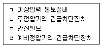
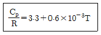
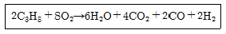
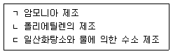
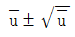
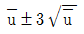
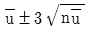
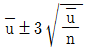
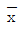

가스기능장 (2010-03-28 기출문제)
1과목: 임의 구분
1. 액화가스를 가열하여 기화시키는 기화장치 의 성능기준으로 틀린 것은?
- 가연성 가스용 기화장치의 접지 저항치는 10[Ω] 이하로 한다.
- 안전장치는 내압시험의 8/10 이하의 압력에서 작동하는 것으로 한다.
- 온수가열 방식의 온수는 80[℃] 이하로 한다.
- 증기 가열 방식의 온도는 100[℃] 이하로 한다.
(정답률: 82%)

2. 도시가스 공급계획을 가장 적절히 설명한 항목은?
- 어떤 지역 내의 피크(peak)시 가스소비량과 그 지역 내 전체 수요가의 가스기구 소비량의 총합계의 비를 추정하는 것이다.
- 해마다 증가하는 수요, 공급구역의 확대를 예측하여 항상 안정된 압력으로 양질의 가스를 원활하게 공급할 수 있도록 공급시설의 증감 또는 개폐를 계획하는 것이다.
- 배관의 구경(지름) 결정과 압력해석을 수행하는 것이다.
- 시시각각 변화하는 가스 수요량을 예측하여 가스제조설비, 가스홀더, 압송기, 정압기 등을 안전하고 효율적으로 운용하여, 수요가에게 안정된 공급압력으로 가스를 공급하는 것이다.
(정답률: 88%)
3. 염소가스는 수은법에 의한 식염의 전기분해로 얻을 수 있다. 이 때 염소가스는 어느 곳에서 주로 발생하는가?
- 수은
- 소금물
- 나트륨
- 인조흑연(탄소판)
(정답률: 86%)
4. 다음 중 이상기체의 법칙에 가장 가까운은?
- 저압, 고온에서 이상기체의 법칙에 접근한다.
- 고압, 저온에서 이상기체의 법칙에 접근한다.
- 저압, 저온에서 이상기체의 법칙에 접근한다.
- 고압 고온에서 이상기체의 법칙에 접근한다.
(정답률: 88%)
5. Dalton의 법칙에 대한 설명으로 옳지 않은 것은?
- 모든 기체에 대해 정확히 성립한다.
- 혼합기체의 전압은 각 기체의 분압의 합과같다.
- 실제기체의 경우 낮은 압력에서 적용할 수 있다.
- 한기체의 분압과 전압의 비는 그 기체의 몰수와 전체 몰수의 비와 같다.
(정답률: 88%)
6. 일반도시가스사업자 정압기 이상압력 상승 시[보기]의 안전장치 작동순서로 적합한 것은?

- ㄱ - ㄴ - ㄷ - ㄹ
- ㄴ - ㄷ - ㄹ - ㄱ
- ㄷ - ㄹ - ㄱ - ㄴ
- ㄹ - ㄱ - ㄴ - ㄷ
(정답률: 90%)
7. 액화산소 5L를 기준했을 때 다음 중 어느 경우에 공기액화 분리기의 운전을 중지하고 액화산소를 방출해야 하는가?
- 탄화수소의 탄소의 질량이 500[mg]을 넘을 때
- 탄화수소의 탄소의 질량이 50[mg]을 넘을 때
- 아세틸렌이 2[mg]을 넘을 때
- 아세틸렌이 0.2[mg]을 넘을 때
(정답률: 88%)
8. 가스액화 분리장치용 구성기기 중 왕복동식 팽창기에 대한 설명으로 옳은 것은?
- 팽창비가 작다.
- 효율이 60-65[%] 정도로서 높지 않다
- 흡입압력의 범위가 좁다.
- 기통 내의 윤활에 오일을 사용하지 않으므로 깨끗하다.
(정답률: 74%)
9. 케이싱 내에 암로터 및 숫로터의 회전운동에 의해 압축되어 진동이나 맥동이 없고 연속송출이 가능한 용적형 압축기는?
- 컴파운드 압축기
- 축류 압축기
- 터보식 압축기
- 스크류 압축기
(정답률: 91%)
10. 배관 설계도면 작성관련 설계 시 종단면도 에 기입할 사항이 아닌 것은?
- 설계가스배관 및 기 설치된 가스배관의 위치
- 교차하는 타매설물, 구조물
- 설계 가스배관 계획 정상높이 및 깊이
- 기울기 및 포장종류
(정답률: 81%)
11. 도시가스 공급시설 중 정압기(지)의 기준에 대한 설명으로 옳지 않은 것은?
- 정압기를 설치한 장소는 계기실, 전기실 등과 구분하고 누출된 가스가 계기실 등으로 유입되지 아니하도록 한다.
- 정압기의 입구측, 출구측 및 밸브기지는 최고사용압력의 1.25배 이상에서 기밀성능을 가지는 것으로 한다.
- 지하에 설치하는 정압기 실은 천정, 바닥 및 벽의 두께가 각각 30[cm] 이상의 방수조치를 한 콘크리트로 한다.
- 정압기의 입구에는 수분 및 불순물제거장치를 설치한다.
(정답률: 89%)
12. 용기 제조자의 수리범위에 해당하는 것은?
- 저온 또는 초저온 용기의 단열재 교체
- 특정 설비 몸체의 용접
- 냉동기 용접 부분의 용접
- 냉동설비의 부품교체 및 용접
(정답률: 81%)
13. 용기에 액체질소 56[kg]이 충전되어 있다. 외부에서 열이 매시간 10[kcal씩 액체질소에 공급될 때 액체질소가 28[kg]으로소되는데 걸리는 시간은? (단, N2의 증발 잠열은 1600[cal/mol]이다.)
- 16시간
- 32시간
- 160시간
- 320시간
(정답률: 63%)
14. 그레이엄(Graham)의 확산속도 법칙을 옳게 표시한 것은?
- 기체분자의 확산속도는 일정한 온도에서 기체분자량의 제곱근에 반비례한다
- 기체분자의 확산속도는 일정한 온도에서 기체분자량의 제곱근에 비례한다
- 기체분자의 확산속도는 일정한 압력에서 기체분자량에 반비례한다
- 기체분자의 확산속도는 일정한 압력에서 기체분자량에 비례한다
(정답률: 69%)
15. 탄소강의 표준 조직에 대한 설명으로 옳은 것은?
- 탄소강의 주조직을 레데뷰라이트라 한다.
- 아공서광은 α페라이트와 펄라이트의 혼합조직이다.
- C 0.8~2%를 공석강이라 한다.
- 공석강은 100% 시멘타이트 조직이다.
(정답률: 87%)
16. 가스크로마토그래피(gas chromatography)의 구성요소가 아닌 것은?
- 분리관(컬럼)
- 검출기
- 기록계
- 파라듐관
(정답률: 93%)
17. 가스도매사업의 가스공급시설로서 배관을 지하에 매설하는 경우의 기준에 대한 설명 중 틀린 것은?
- 가스배관 외부에 콘크리트를 타설하는 경우에는 고무판 등을 사용하여 배관의 피복부위와 콘크리트가 직접 접촉하지 아니하도록 한다.
- 배관은 그 외면으로부터 지하의 다른 시설물과 0.3[m] 이상의 거리를 유지한다.
- 지표면으로부터 배관의 외면까지의 매설 깊이는 산이나 들에서는 1.2[m] 이상 그 밖의 지역에서는 1.5[m] 이상으로 한다.
- 철도의 횡단부 지하에는 지면으로부터 1.2[m] 이상인 깊이에 매설하고 또한 강제의 케이스를 사용하여 보호한다.
(정답률: 89%)
18. 다음 중 흡수식 냉동기에 사용되는 냉매는? (단, 흡수제는 파라핀유이다.)
- 톨루엔
- 염화메틸
- 물
- 암모니아
(정답률: 74%)
19. 암모니아를 사용하여 질산제조의 원료를 얻는 반응식으로 가장 옳은 것은?
- 2NH3+ CO → (NH2)2CO + H2O
- NH3+ HNO3 → NH4NO3
- 2NH3+ H2SO4 → (NH4)2SO4
- 4NH3+ 5O2 → 4NO + 6H2O
(정답률: 87%)
20. 배관의 보호포 설치에 적용되는 재질 및 규격과 설치기준에 대한 설명으로 틀린 것은?
- 두께는 0.2[mm] 이상으로 한다.
- 보호포의 폭은 15[cm] 이상으로 한다.
- 보호포의 바탕색은 최고사용압력이 저압이 관은 적색으로 한다.
- 일반형 보호포와 탐지형 보호포로 구분한다.
(정답률: 93%)
2과목: 임의 구분
21. 아세틸렌 충전작업의 기준에 대한 설명 중 틀린 것은?
- 아세틸렌을 2.5lMPa]의 압력으로 압축하는 때에는 질소, 메탄, 일산화탄소 또는 에틸렌 등의 희석제를 첨가한다.
- 습식 아세틸렌발생기의 표면은 70[C] 이하의 온도로 유지하고, 그 부근에서는 불꽃이 튀는 작업을 하지 아니한다.
- 아세틸렌을 용기에 충전하는 때에는 미리 용기에 다공물질을 고루 채워 다공도가 75[%] 이상 92[%] 미만이 되도록 한 후 아세톤 또는 디메틸포름아미드를 고루 침윤시키고 중전한다.
- 아세틸렌을 용기에 충전하는 때의 충전중의 압력은 1.5[MPa] 이하로 하고, 충전 후에는 압력이 15[℃]에서 1,0[MPa] 이하로 될 때까지 정치하여 둔다.
(정답률: 80%)
22. 허용 인장응력 10(kgf/mm2], 두께 10[mm]의 강판을 150[mm] V홈 맞대기 용접이음을 할 때 그 효율이 80[%]라면 용접 두께 t 는 얼마로 하면 되는가? (단, 용접부의 허용응력은 8[kgf/mm2]이다.)
- 10[mm]
- 12[mm]
- 14[mm]
- 16[mm]
(정답률: 53%)
23. 비상공급시설 설치신고서에 첨부하여 시장∙군수∙구청장에게 제출해야 하는 서류가 아닌 것은?
- 안전관리자의 배치현황
- 설치위치 및 주위상황도
- 비상공급시설의 설치사유서
- 가스사용 예정시기 및 사용예정
(정답률: 87%)
24. 다음은 비점이 낮은 순서로 나열한 것이다. 옳은 것은?
- H2 - O2 - N2
- H2 - N2 - O2
- O2 - N2 - H2
- N2 - O2 - H2
(정답률: 77%)
25. 열전대 온도계의 특징에 대한 설명 중 틀린 것은?
- 접촉식 온도계 중 고온 측정에 적합하다.
- 정밀측정에는 회로의 저항에 영향을 받지 않는 전위차계를 사용한다.
- 계기를 동작시키는데 별도의 전원이 필요하다.
- 열기전력 지시에는 밀리볼트계를 사용한다.
(정답률: 77%)
26. 일반기체상수 R이 모든 가스에 대하여 같음을 증명하는데 적용되는 법칙은?
- 줄(Joule)의 법칙
- 아보가드로(Avogadro)의 법칙
- 라울(Raoult)의 법칙
- 보일-샤를(Boyle-Charles)의 법칙
(정답률: 84%)
27. 크리프(creep)는 재료가 어떤 온도하에서는 시간과 더불어 변형이 증가되는 현상인데, 일반적으로 철강재료 중 크리프 영향을 고려해야 할 온도는 몇 [℃] 이상일 때인가?
- 50[℃]
- 150[℃]
- 250[℃]
- 350[℃]
(정답률: 87%)
28. 산소 100[L]가 용기의 구멍을 통해 새나가는데 20분이 소요되었다면 같은 조건에서 이산화탄소 100[L]가 새어나가는데 걸리는 시간은 약 얼마인가?
- 20.0분
- 23.5분
- 27.0분
- 30.5분
(정답률: 71%)
29. 안전성 평가기법 중 결함수분석에 대한 설명으로 옳은 것은?
- 연역적 분석이 가능한 기법이다.
- 귀납적 분석 이 가능한 기법이다.
- 잠재적인 사고결과를 평가하는 기법이다.
- 위험에 대한 상대위험순위를 비교하는 기법이다.
(정답률: 73%)
30. 저장능력이 10[톤]인 액화석유가스 저장소 시설에서 선임하여야 할 안전관리자의 기준은?
- 안전관리 총괄자 1명, 안전관리 부총괄자아지고 1명, 안전관리원 1명 이상
- 안전관리 총괄자 1명, 안전관리 책임자 1명, 안전관리원 1명 이상
- 안전관리 총괄자 1명, 안전관리 책임자 1명
- 안전관리 총괄자 1명, 안전관리원 1명
(정답률: 78%)
31. 냉동장치의 점검, 수리 등을 위하여 냉매계통을 개방하고자 할 때는 펌프다운(pump down)을 하여 계통 내의 냉매를 어디에 회수하는가?
- 수액기
- 압축기
- 증발기
- 유분리기
(정답률: 87%)
32. 저압식 공기액화 분리장치에 탄산가스 흡착기를 설치하는 주된 목적은?
- 공기량 증가
- 축열기 효율 증대
- 팽창 터빈 보호
- 정제산소 및 질소 순도 증가
(정답률: 89%)
33. 시안화수소(HCN)가스를 장기간 저장하지 못하는 이유로 옳은 것은?
- 분해폭발하기 때문에
- 중합폭발하기 때문에
- 산화폭발하기 때문에
- 촉매폭발하기 때문에
(정답률: 90%)
34. 도시가스 배관의 지하매설 시 다짐공정 및 방법에 대한 설명으로 틀린 것은?
- 배관에 작용하는 하중을 지지하기 위하여 배관하단에서 배관상단 30[cm] 까지는 침상재료를 포설한다.
- 되메움 공정에서는 배관상단으로부터 50[cm]의 높이로 되메움 재료를 포설한 후마다 다짐작업을 한다.
- 흙의 함수량이 다짐에 부적당 할 때는 다짐작업을 해서는 안 된다.
- 콤팩터, 래머 등 현장 상황에 맞는 다짐기계를 사용하여야 하나 폭 4[m] 이하의 도로 등은 인력 다짐으로 할 수 있다.
(정답률: 70%)
35. 제조가스 중에 포함된 불순물과 그로 인한 장해에 대한 설명으로 가장 옳은 것은?
- 황, 질소화합물은 배관, 정압기 기구의 노즐에 부착하여 그 기능을 저하시키거나 저해하게 된다.
- 물은 가스의 승압, 냉각에 의한 물, 얼음, 물과 탄화수소와 수화물을 생성하여 배관 등의 부식을 조장하고 배관, 밸브 등을 폐쇄시킨다.
- 나프탈렌, 타르, 먼지는 가스중의 산소와 반응하여 NO2로 되며, NO2는 불포화탄화수소와 반응하여 고무가 생성된다. 이 고무는 배관, 정압기, 기구의 노즐에 부착하여 그 기능을 저하시키고 저해하게 된다.
- 산화질소(NO), 고무는 연소에 의하여 아황산가스, 아초산, 초산이 발생하여 인체나 가축에 피해를 주며 가스기구, 배관 정압기 등의 기물을 부식시킨다.
(정답률: 80%)
36. 아세틸렌(C2H2) 가스는 주로 무엇으로 제조하는가?
- 탄화칼슘
- 탄소
- 카다리솔
- 암모니아
(정답률: 88%)
37. 상용압력 200[kgf/cm2]인 고압설비의 안전밸브 작동압력은 몇 [kgf/cm2]인가?
- 160
- 200
- 240
- 300
(정답률: 73%)
38. NH3의 냉매번호는 "R-717"이다. 백단위의 7은 무기물질을 뜻하는데 그 뒤 숫자 17은 냉매의 무엇을 뜻하는가?
- 냉동계수
- 증발잠열
- 분자량
- 폭발성
(정답률: 89%)
39. 다음 중 공식(孔蝕)의 특징에 대한 설명으로 옳은 것은?
- 양극반응의 독특한 형태이다.
- 부식속도가 느리다.
- 균일부식의 조건과 동반하여 발생한다.
- 발견하기가 쉽다.
(정답률: 85%)
40. 피셔(fisher)식 정압기의 2차압 이상 상승의 원인에 해당하는 것은?
- 정압기의 능력부족
- 필터의 먼지류 막힘
- pilot supply valve에서의 누설
- 파일럿 오리피스의 녹 막힘
(정답률: 87%)
3과목: 임의 구분
41. 이상기체에 대한 설명으로 옳은 것은?
- 이상기체의 내부에너지는 온도만의 함수이다.
- 이상기체의 내부에너지는 압력만의 함수이다.
- 이상기체의 내부에너지는 부피만의 함수이다.
- 비열비 k 는 압력에 관계없이 1의 값을 갖는다.
(정답률: 87%)
42. 아세틸렌을 압축하는 Reppe 반응장치의 구분에 해당하지 않는 것은?
- 비닐화
- 에티닐화
- 환중합
- 니트릴화
(정답률: 83%)
43. 국제표준규격 ISO 5167에서 다루고 있는 차압 1차장치(primary device) 중 오리피스 판(Orifice plate)의 압력 tapping 방법이 아닌 것은?
- D 및 D/2 tapping
- corner tapping
- flange tapping
- screw tapping
(정답률: 73%)
44. L∙atm과 단위가 같은 것은?
- 힘
- 에너지
- 질량
- 밀도
(정답률: 85%)
45. 질소의 정압 몰열용량 Cp[J/mol∙K]가 다음과 같고 1[mol]의 질소를 1 [atm] 하에서 600℃로부터 20℃로 냉각하였을 때 발생하는 열량은 약 몇 [kJ]인가? (단, R은 기체상수이다.)

- 15.6
- 16,6
- 17.6
- 18.6
(정답률: 30%)
46. 밀폐된 용기 내에 1[atm], 27[C]로 된 프로판과 산소가 2 : 8의 비율로 혼합되어 있으며 이것 이 연소하여 다음과 같은 반응을 하고 화염온도는 3000[k]가 되었다고 한다. 이 용기 내에 발생하는 압력은 몇 [atm]인가? (단, 내용적 변화는 없다.)

- 2
- 6
- 12
- 14
(정답률: 56%)
47. 온도 200[℃], 부피 400[L]의 용기에 질소140[kg]을 저장할 때 필요한 압력을 Vander Waals 식을 이용하여 계산하면 약 몇 [atm]인가? (단, a = 1.351[atm·L2/mol2 = 0.0386(L/mol]이다)
- 36.3
- 363
- 72.6
- 726
(정답률: 62%)
48. 다음 중 산화폭발의 종류가 아닌 것은?
- 가스폭발
- 분진폭발
- 화약폭발
- 증기폭발
(정답률: 78%)
49. 다음 물질의 제조(공업적)시 최고압력이 높은 것부터 순서대로 나열된 것은?

- ㄱ - ㄴ - ㄷ
- ㄴ - ㄱ - ㄷ
- ㄷ - ㄴ - ㄱ
- ㄱ - ㄷ - ㄴ
(정답률: 70%)
50. 동력으로 관을 저속으로 회전시켜 나사절삭기를 밀어 넣는 방법으로 나사가 절삭되며 장치가 간단하여 운반이 쉽고 주로 관지름이 작은 것에 사용되는 것은?
- 다이헤드식 나사절삭기
- 호브식 나사절삭기
- 오스터식 나사절삭기
- 램식 나사절삭기
(정답률: 61%)
51. 식품접객업소로서 영업장의 면적이 몇 [m2]이상인 가스사용시설에 대하여 가스누출자동 차단장치를 설치하여야 하는가?
- 33
- 50
- 100
- 200
(정답률: 85%)
52. 동일한 부피를 가진 수소와 산소의 무게를 같은 온도에서 측정하였더니 같은 값이었다 수소의 압력이 2[atm]이라면 산소의 압력은 몇 [atm]인가?
- 0.0625
- 0.125
- 0.25
- 0.5
(정답률: 76%)
53. 플레어스택 설치기준에 대한 설명 중 틀린 것은?
- 파일럿버너를 항상 꺼두는 등 플레어스택에 관련된 폭발을 방지하기 위한 조치가 되어 있는 것으로 한다.
- 긴급이송설비로 이송되는 가스를 안전하게 연소시킬 수 있는 것으로 한다.
- 플레어스택에서 발생하는 복사열이 다른 제조시설에 나쁜 영향을 미치지 않도록 안전한 높이 및 위치에 설치한다.
- 플레어스택에 발생하는 최대열량에 장시간견딜 수 있는 재료 및 구조로 되어 있는 것으로 한다.
(정답률: 89%)
54. 압력 80(kPal, 체적 0.37[m3]을 차지하고있는 이상기체를 등온팽창 시켰더니 체적이 2.5배로 팽창하였다. 이 때 외부에 대해서 한 일은 몇 [N·m]인가?
- 2.71
- 2.71×102
- 2.71x103
- 2.71×104
(정답률: 66%)
55. u 관리도의 관리상한선과 관리하한선을 구하는 식으로 옳은 것은?




(정답률: 88%)
56. 어떤 회사의 매출액이 80000원, 고정비가 15000원, 변동비가 40000원일 때 손익분기점 매출액은 얼마인가?
- 25000원
- 30000원
- 40000원
- 55000원
(정답률: 76%)
57. 계수 규준형 샘플링 검사의 OC 곡선에서 좋은 로트를 합격시키는 확률을 뜻하는 것은? (단, a 는 제1종 과오, β는 제2종 과오이다.)
- α
- β
- 1 - α
- 1 - β
(정답률: 90%)
58. 다음 중 통계량의 기호에 속하지 않는 것은?
- α
- R
- s

(정답률: 62%)
59. 예방보전(Preventive Maintenance)의 효과가 아닌 것은?
- 기계의 수리비용이 감소한다.
- 생산시스템의 신뢰도가 향상된다.
- 고장으로 인한 중단시간이 감소한다.
- 예비기계를 보유해야 할 필요성이 증가한다.
(정답률: 96%)
60. 다음 중 인위적 조절이 필요한 상황에 사용될 수 있는 워크팩터(Work Factor)의 기호가 아닌 것은?
- D
- K
- P
- S
(정답률: 70%)
액화가스를 가열하여 기화시키는 기화장치는 가스를 안전하게 사용하기 위한 장치로, 가스가 기화될 때 발생하는 열과 압력을 제어하여 안전한 사용을 보장해야 합니다. 따라서 성능기준으로는 가열 온도를 100℃ 이하로 제한하는 것이 적절합니다.
가연성 가스용 기화장치의 접지 저항치는 10[Ω] 이하로, 안전장치는 내압시험의 8/10 이하의 압력에서 작동하는 것으로, 온수가열 방식의 온수는 80[℃] 이하로 제한하는 것도 모두 적절한 성능기준입니다.